Inside the Biology of
Hair Growth and Graying
Every strand of hair reflects two essential biological processes: how it grows and how it retains its color.
Deep within the skin, the hair follicle functions as a dynamic mini-organ. Follicular stem cells, dermal papilla cells and melanocytes work together to regulate the hair-growth cycle and pigmentation. These processes are continuously shaped by the personal exposures—including stress, aging, lifestyle, environmental exposure and internal biological changes.
A&S explores how these influences alter follicular signaling and disrupt hair follicle homeostasis. By connecting Exposome Science, Neural Pathways and Hair Follicle Biology, we seek to better understand the mechanisms behind reduced hair growth, follicle miniaturization, pigment loss and graying.
Personal Exposome & Hair Follicle
How the Personal Exposome Reaches the Hair Follicle
The hair follicle is continuously exposed to signals arising from the environment, lifestyle and internal biology. These influences converge through neural, immune, metabolic and oxidative pathways—shaping follicular homeostasis, hair growth and pigmentation.
Environment
UV radiation and climate
Environment
Air pollution and particulate matter
Lifestyle
Psychological stress
Internal Biology
Nutrition and metabolic signals
Lifestyle
Sleep and circadian rhythm
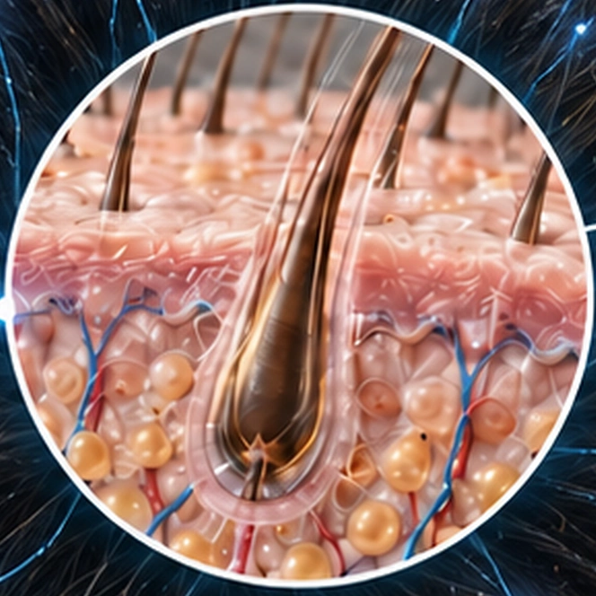
Hair Follicle
- Neural signaling
- Immune signaling
- Metabolic signaling
- Oxidative signaling
- Personal Exposome
- Biological Stress Signals
- Hair Follicle
Hair Follicle Biology & Neural Regulation
The Hair Follicle as a Neurobiological Mini-Organ
Beneath the skin, the hair follicle functions as a dynamic mini-organ in which stem cells, dermal papilla cells, melanocytes, immune mediators, peripheral nerves and blood vessels work together to regulate growth, regeneration and pigmentation.
Central stress responses and peripheral neural signals reach this microenvironment through cortisol, catecholamines, neurotransmitters and neuropeptides. Together, these signals shape the hair-growth cycle, pigment activity, immune balance and microcirculation.
A&S studies how personal exposome signals are translated through the neuro–hair follicle axis into biological responses.
Central Stress Response
HPA Axis · Autonomic Pathways
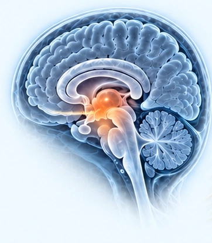
- Cortisol
- Catecholamines
Peripheral Neural Signaling
Sympathetic Nerves · Sensory Nerves
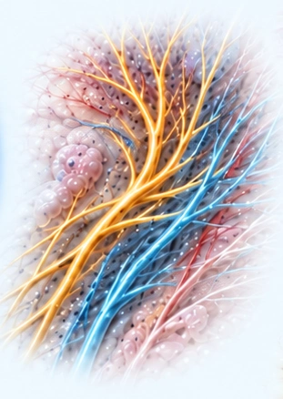
- Neuropeptides
- Neurotransmitters
Follicular Microenvironment
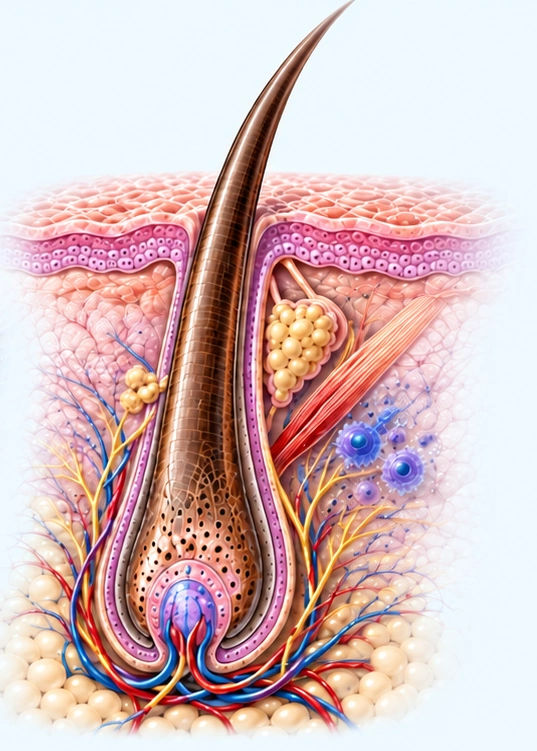
- Hair Follicle Stem Cells
- Sebaceous Gland
- Immune Cells
- Peripheral Nerves
- Melanocytes
- Dermal Papilla Cells
- Blood Vessels
Neurocutaneous Feedback
- Hair Growth
- Pigmentation
- Immune Balance
- Microcirculation
Hair Growth & Alopecia
Hair Growth, Cycling & Hair Loss
Hair growth depends on the precise timing of a repeating biological cycle. When follicular signaling remains balanced, stem cells and dermal papilla cells support regeneration and sustained anagen growth. Persistent biological stress can shorten this active phase, accelerate regression and progressively reduce follicle size.
A&S examines how exposome-related and neural signals influence this transition from follicular homeostasis to impaired hair growth.
The Hair-Growth Cycle
Anagen Active Growth
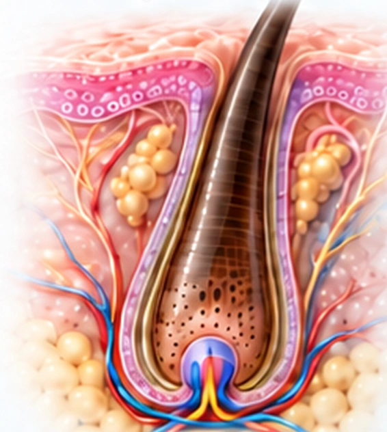
Catagen Regression
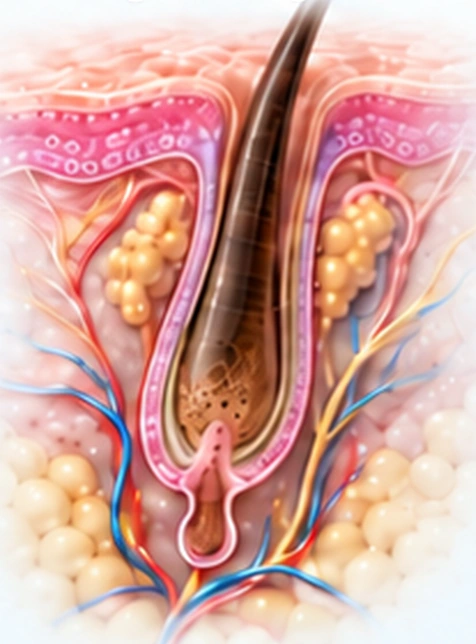
Telogen Resting
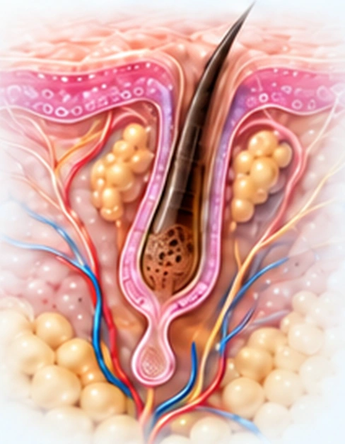
Exogen Shedding
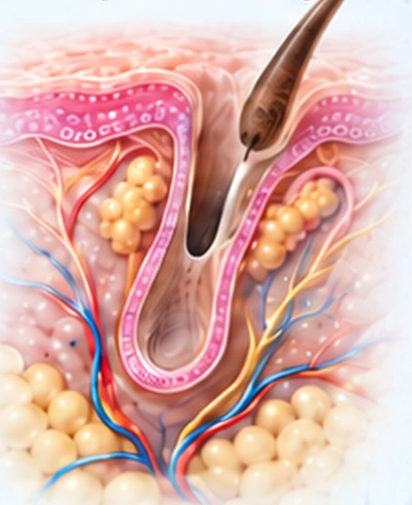
Growth-Supporting Signals
- Wnt / β-catenin
- SHH
- PI3K / AKT
Biological Progression Toward Hair Loss
Follicular Stress
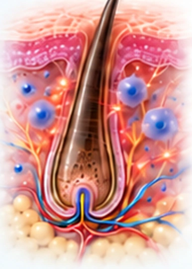
- Oxidative Stress
- Inflammation
- Hormonal Dysregulation
- Neurogenic Stress
Cycle Disruption
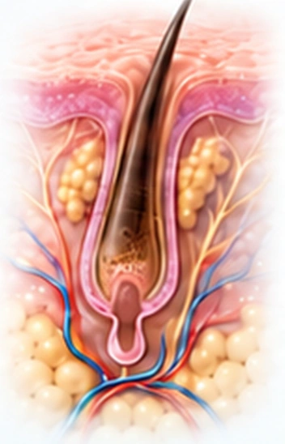
- Shortened Anagen
- Premature Catagen
- Impaired Regeneration
Follicle Miniaturization
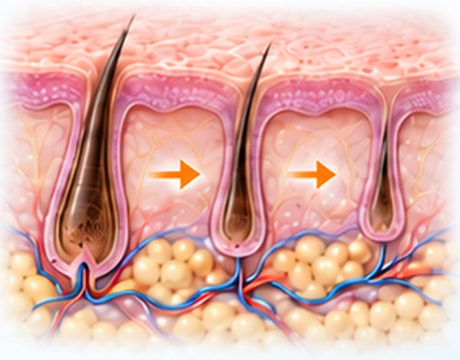
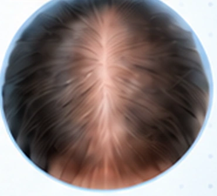
- Reduced Hair Density
- Thinner Hair Shafts
- Progressive Miniaturization
Follicular Pigment Biology
The Biology of Hair Pigmentation and Graying
Hair color is produced during the active growth phase by melanocytes within the hair bulb. Melanocyte stem cells replenish this pigment-producing population, while coordinated signaling regulates melanin synthesis and transfer into the growing hair shaft.
With aging and cumulative exposome stress, oxidative damage, inflammation and altered neural or hormonal signaling can impair melanogenesis and exhaust the melanocyte stem-cell reservoir—progressively reducing pigment and increasing graying.
A&S investigates how pigment-cell resilience and follicular homeostasis may help preserve healthier-looking hair color vitality.
The Follicular Pigment Unit
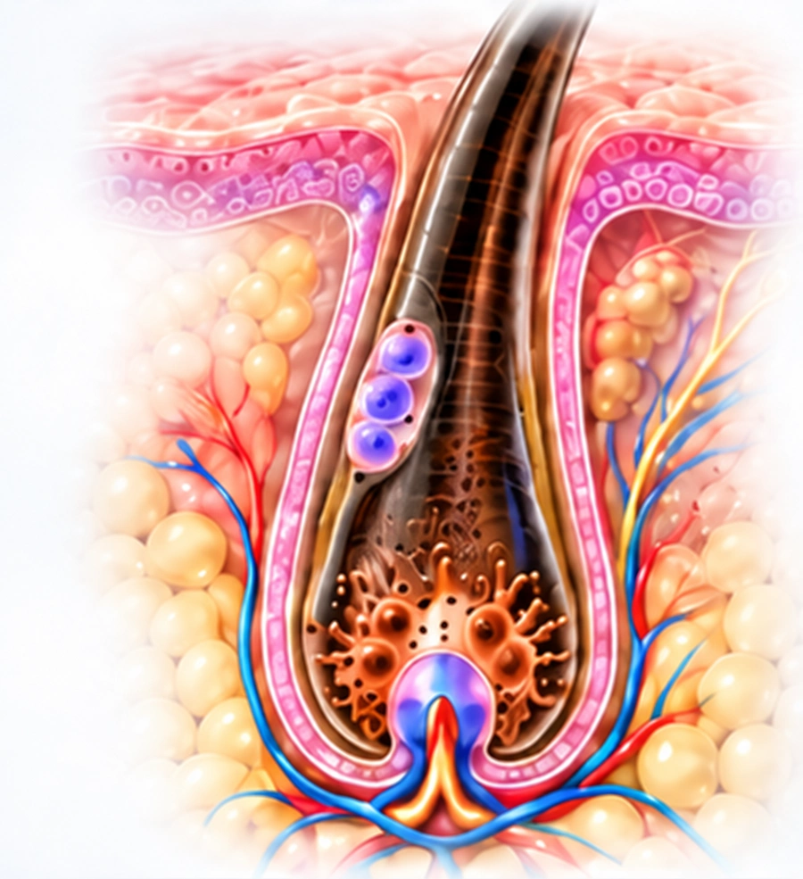
Melanocyte Stem Cell
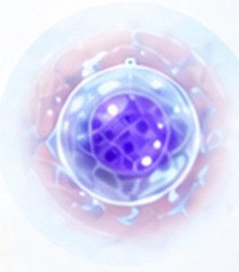
Melanoblast
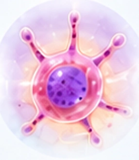
Follicular Melanocyte
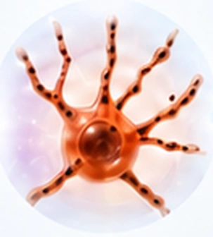
Melanin Transfer
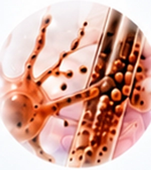
Pigmented Hair Shaft
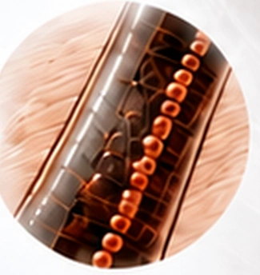
Scroll to explore the pigment pathway
- Wnt/β-catenin
- α-MSH/MC1R
- MITF
- Tyrosinase
Biological Progression Toward Graying
- Oxidative Stress
- Inflammation
- Neural & Hormonal Dysregulation
- Cellular Aging
- Pigment-Cell Resilience
- Follicular Homeostasis
- Color Vitality